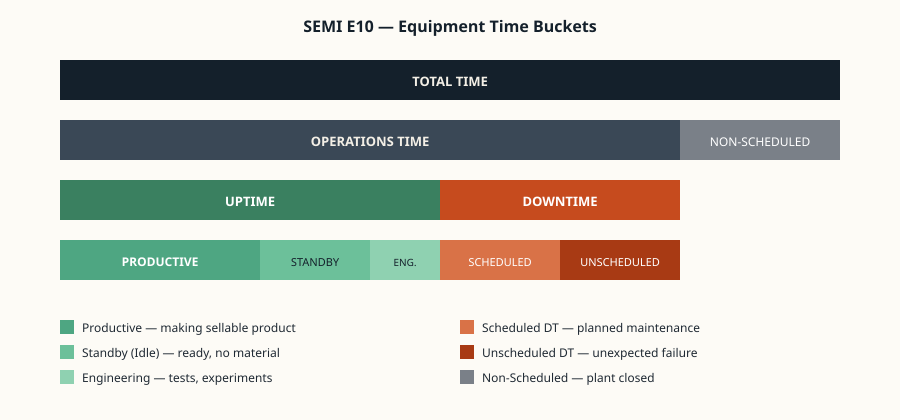

The product
A 500 ml PET bottle of drinking water. Familiar, everyday, and surprisingly involved to make.
A finished unit consists of four components: the PET bottle itself (blown on-site from a small plastic preform), the water that fills it, the plastic screw cap that seals it, and the printed label wrapped around the body. Each of those components is handled by a dedicated station, and a fifth station performs the final quality check and packs accepted bottles for shipping.
The choice of bottled water hits the assignment's four-stage minimum and goes one further. It is also a real, easy-to-recognise industrial process, which makes the simulation immediately legible to anyone who looks at the HMI.

Station 1 — Bottle Blow
Stretch-blow moulding turns a thumb-sized PET preform into a 500 ml bottle in roughly two seconds.
The station receives a heated preform, places it inside a bottle-shaped mould, and inflates it with high-pressure air. The hot PET stretches against the mould walls and cools into shape. Output: an empty bottle, weighed and visually checked, ready for the fill station. A misshapen blow is rejected here — the FSM transitions that unit to the defective stage and the rest of the line skips it.
Station 2 — Water Fill
The bottle is filled with purified, chilled drinking water under a controlled flow.
The station tracks two parameters that the simulator surfaces to Grafana: the fill volume per bottle, and the water temperature. A volume outside tolerance — under-fill or over-fill — marks the bottle as defective. Temperature is logged continuously as a process health signal, the way a real plant would track CIP cleanliness or chiller performance.
Station 3 — Cap On
A plastic screw cap is fed from a hopper, placed on top of the bottle and torqued down.
This station is the simulator's deliberate weak spot: cap-feeder jams are the most common cause of unscheduled downtime in a real bottling plant, so the simulation injects them at random intervals. When the jam fires, the station enters Unscheduled Downtime, the HMI raises a clearly visible alarm, and upstream stations starve until the operator acknowledges the fault and clears the feeder.
Station 4 — Label
A pre-printed label is wrapped around the bottle and heat-sealed at the seam.
The label station consumes a roll of labels and applies one per bottle. The simulation models the roll as a depletable resource — when it runs out, the station enters Standby and the HMI prompts the operator to load a fresh roll. Labelling defects (skew, double-feed) are flagged to the QC station for downstream rejection.
Station 5 — QC & Pack
Every bottle is inspected one last time, then accepted units are packed for shipping.
The QC step performs a final integrated check: cap present and seated, label present and aligned, fill level inside tolerance, no upstream defect flags raised. Bottles that pass enter the pack count and are added to the carton; bottles that fail are diverted to the reject bin and counted toward the quality loss in the OEE calculation. The pack count drives the Bottles-per-Hour KPI shown on the HMI.
Equipment state model
Every station, every second, lands in exactly one SEMI E10 bucket. That is what feeds the OEE calculation.
The simulator uses a three-state simplification of SEMI E10 — Productive, Standby, Unscheduled Downtime — which is the standard subset for an OEE demo. The full six-state model is documented on the Question Bank page in case the examiner asks for it.
